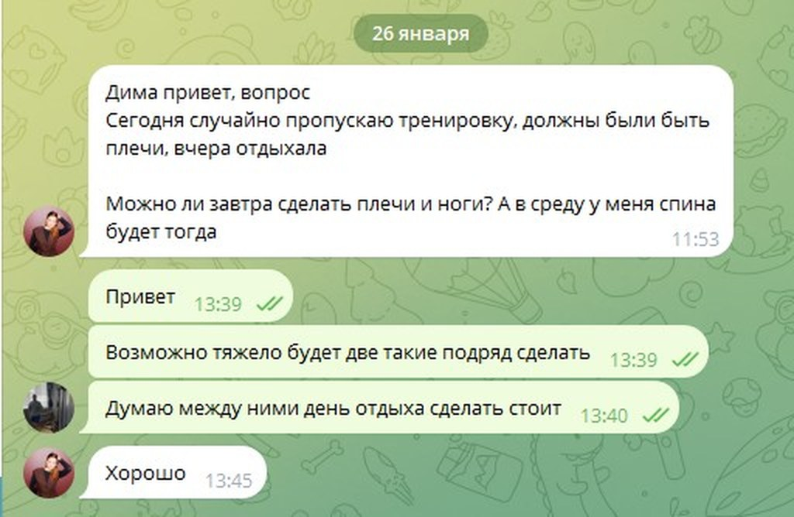
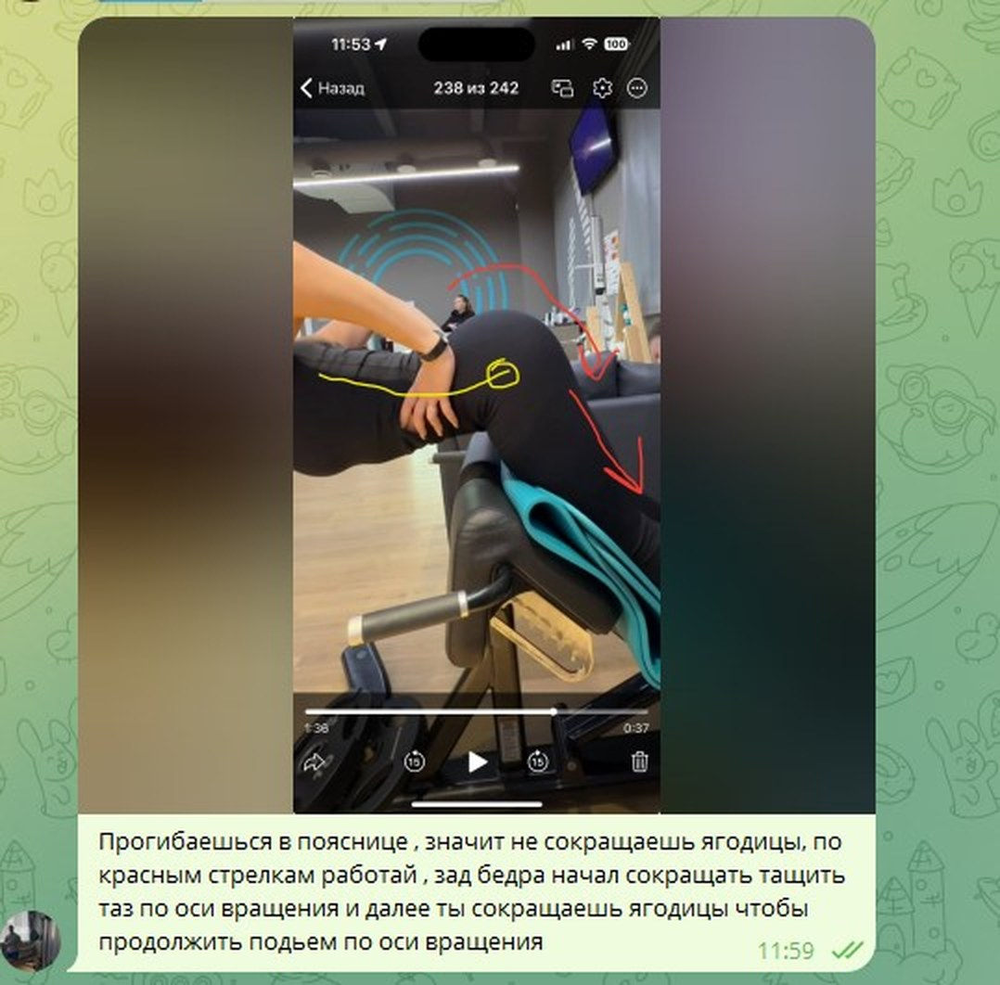
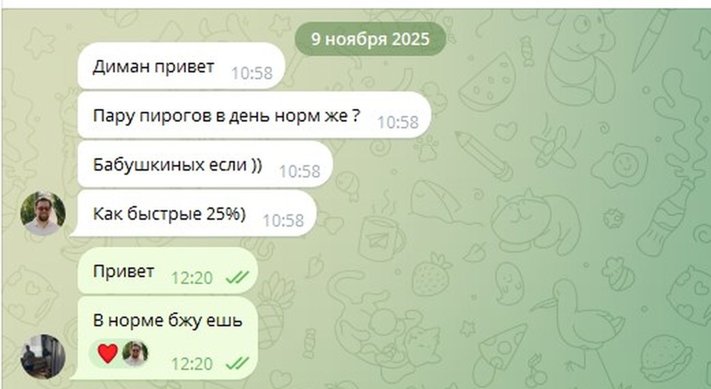

Персональное ведение формы для занятых людей 35+
В сорок быть в форме лучше, чем в тридцать
Без того, чтобы зал стал вашей второй работой.
Почти любой вопрос вы закрываете деньгами и делегированием: юрист, бухгалтер, ремонт, врач. Тело — единственное, где вы всё ещё разбираетесь сами, по видео из интернета и советам знакомых. И единственное, где не выходит.
Для кого
Всё решается деньгами и делегированием. Кроме этого
Если узнали хотя бы два пункта — дальше можно читать спокойно: страница написана для вас.
Утром смотрите в зеркало и первым делом отводите взгляд.
К четырём часам дня энергия заканчивается — и вы уже списываете это на возраст.
Просыпаетесь уставшим, хотя спали восемь часов.
Врач сказал то, что впервые не получилось отмахнуть.
Начинали три-четыре раза, и каждый раз хватало недели на две.
Живот мешает завязать шнурки и собирается складками, когда вы садитесь.
Вы не жалеете денег на врачей, стоматолога и внешний вид — а телом занимаетесь по видео из интернета.
Вам важно, чтобы изменения заметили. И вы не считаете это глупостью.
Во всех восьми пунктах одно и то же. Любую другую задачу вы давно решаете, наняв того, кто в ней разбирается: юриста, бухгалтера, врача, прораба. Тело — последнее, что вы до сих пор тащите сами. И единственное, где результат не держится.
Почему не получалось
Всё это было придумано не под вашу жизнь
Марафон или приложение
Один план на тысячу человек. Держится ровно столько, сколько держится запал: две-три недели. Потом перелёт, застолье, простуда — и возвращаться уже некуда.
Минус пять килограммов и плюс семь через два месяца.Тренер, который выдал план
План получен, дальше сами. Но результат делает не план, а то, что происходит с ним в живой неделе: когда вы не спали, ели в аэропорту и пропустили два занятия.
План правильный, жизнь прошла мимо него.Сила воли и жёсткий режим
Метод, который приносил вам результат везде: терпеть и дожимать. В теле он работает наоборот — организм отвечает на давление удержанием веса, усталостью и срывом.
Чем сильнее давите, тем хуже отвечает тело.Вам не нужна более жёсткая версия того же самого. Нужна нагрузка, которую вы выдержите не две недели, а год — и которая при этом действительно меняет тело.
Метод
«Минимум» — это не «мало». Это точно
Прогресса не бывает по одной из двух причин: человек делает слишком много или делает недостаточно сильно. Первое ломает восстановление. Второе не даёт телу повода меняться. Лечится и то и другое одним — точной дозой.
Правило дозы
Почему больше — не значит лучше
- Слишком легко. Час на дорожке и подходы «до приятной усталости». Тело не получает повода меняться — оно и не меняется.
- Один короткий подход до предела. Сигнал получен. Дальше растит не зал, а восстановление — и всё, что вы делаете сверх, это восстановление отнимает.
- Слишком много. Десять подходов на мышцу удлиняют восстановление и отодвигают результат, а не приближают его.
Порядок в питании
Что настраиваю я, а что вы просто едите
Сначала закрываем то, без чего тело просто не работает: из чего оно строится и на чём держится ваша энергия. Это я считаю и настраиваю сам — вам ничего считать не нужно.
Всё, что тратится сверх этого, — ваша территория. Любимая еда, ресторан, десерт. Я не запрещаю бургер. Я объясняю, как он повлияет, и нахожу способ, чтобы не повлиял.
Отсюда и берутся три-четыре тренировки в неделю по 30–40 минут. Не потому что «вам некогда», а потому что больше телу не нужно.
Честно о цене
Почему это стоит дороже, чем тренер
Тренер продаёт план. План стоит недорого — и это честная цена, потому что вся работа после него остаётся на вас: считать, вспоминать, встраивать, ловить свои ошибки и начинать заново после каждой поездки.
Я продаю противоположное: чтобы вы об этом не думали.
- Учёт полностью на мнеВы встаёте на весы и фотографируете тарелку. Сведение, динамика, выводы — моя половина. Ни одного «пришлите замеры» и ни одного напоминания.
- Решения приняты заранееРесторан, перелёт, застолье, неделя без сна, болезнь. На каждую ситуацию у вас есть готовый ответ — не нужно писать мне и ждать.
- Управление, а не планКурс меняется по вашим данным, а не по расписанию из методички. И ошибку замечаю я, а не вы через месяц по остановившемуся весу.
- Ответственность за результатНе за файл с программой и не за формулировку «вы просто плохо старались».
Примерно столько же стоит визит к стоматологу, после которого вы полгода ни о чём не думаете. Разница в том, что здесь результат остаётся с вами и через десять лет.
Как это устроено на практике
Ваша половина занимает три минуты в день. Остальное — моя
Люди бросают не потому, что им лень тренироваться. Они бросают, потому что устают вести учёт. Поэтому учёт я забрал себе целиком.
Ваша половина
Три действия
Ни таблиц, ни дневников, ни кухонных весов, ни подсчётов в уме.
- Сфотографировать тарелкуИли надиктовать голосом, что съели. Расчёт под вашу персональную норму уже настроен — искать продукты и считать граммы не нужно.
- Тренироваться через деньПо вашей программе, где к каждому упражнению — моё видео, подходы, повторы и комментарий: что именно должно чувствоваться и чего быть не должно.
- Встать на весыВесы покупаю и присылаю я. Показатели уходят ко мне сами: ничего записывать и никуда пересылать не надо.
Моя половина
Всё остальное
Происходит без вашего участия — вы узнаёте о результате, а не о процессе.
- Собираю данные самЗахожу и вижу питание, вес и активность за период. Вам не приходит ни одного «пришлите замеры» и ни одного напоминания.
- Свожу их в картинуНе отдельные цифры за вторник, а тренды: где просело, где выросло, что это значит и что меняем на следующем отрезке.
- Правлю курсПитание и тренировки меняются по вашим данным, а не по расписанию из методички. Ошибку замечаю я — обычно до того, как её заметите вы.
- Разбираю ваши видеоПрисылаете подход из зала — возвращаю его с пометками прямо поверх кадра и объяснением, что включать и в какой момент.
- Отвечаю на вопросыВ любое время и без «давайте обсудим на созвоне в четверг».
Именно поэтому люди доходят до конца. Бросают не тренировки — бросают рутину вокруг них. Рутины здесь нет.
Как идёт работа
Три этапа, и первый может не понадобиться
Вы с самого начала видите весь маршрут: где вы сейчас, что будет дальше и по каким признакам мы поймём, что идём правильно.
Восстановление
Нужен, если вы годами то садились на диету, то срывались: организм в таком режиме держит вес, забирает силы и плохо спит. Сначала возвращаем сон, аппетит и энергию — иначе любое снижение закончится откатом, и вы это уже проходили.
Если такого фона нет — например, вы просто долго переедали, а организм не измотан, — этот этап пропускаем и начинаем сразу со снижения. Решаем на разборе.
Снижение: уходит жир, остаются мышцы
Спокойный управляемый темп — примерно один размер одежды за полтора-два месяца. Три-четыре тренировки в неделю по 30–40 минут, без выматывания; на отдельных отрезках добавляется спокойное кардио после занятия. Курс правится по ходу: не «терпите до конца», а «вот что поменяли на эту неделю и почему».
Закрепление
Самый недооценённый этап и главная причина, по которой люди возвращают вес. Организму нужно время, чтобы принять новый вес как норму: мы плавно поднимаем питание, сохраняя форму, и оставляем режим, который держится без ежедневного контроля.
Дальше начинается поддержание: форма уже есть, и задача меняется — удержать её так, чтобы это не требовало усилий. Как это будет выглядеть именно у вас, решаем ближе к делу.
Как это выглядит изнутри
Три настоящих фрагмента из рабочих чатов, с разрешения подопечных. Ничего не переписано.
«Пропустил тренировку — поставлю две подряд, догоню» — почему я ответил «нет»

Человек сам просит нагрузить его сильнее. Ответ — «между ними стоит сделать день отдыха».
Довольно часто моя работа в том, чтобы притормозить, а не подогнать. Результат делает восстановление, а не количество подходов, — и это ровно то, чего не ждут от тренера.
Видео подхода из зала — разбираю прямо поверх кадра

Так выглядит «разбор техники удалённо» на практике: стрелки поверх вашего же видео и объяснение, что и в какой момент включать.
Это то, что определяет, будет у вас через десять лет форма или больная спина.
«Пару пирогов в день норм же? Бабушкиных если» — весь мой список запретов

Ответ: «в норме БЖУ ешь». И это не поблажка, а метод: запреты работают ровно до первого повода, а понимание — годами.
Результаты подопечных
Три человека и три разные стены, о которые они бились до меня
Нажмите на карточку — полный разбор с замерами, графиками и перепиской откроется прямо здесь.
Фото и цитаты публикую только с письменного разрешения. Замеры, снимки с аппарата и переписку показываю целиком на разборе.
Форматы работы
Два формата. Какой ваш — решаем на разборе
Метод в обоих одинаковый — весы, учёт без таблиц и разбор техники есть везде. Отличие только в том, подключён ли врач и насколько плотно я держу вас в нестандартные недели.
Система
Когда нужен выстроенный процесс и человек, который его ведёт.
- Персональное питание под вашу жизнь, поездки и любые ограничения в еде
- Персональные тренировки 30–40 минут: к каждому упражнению — моё видео и комментарий
- Умные весы — покупаю и присылаю я, показатели идут ко мне сами
- Учёт еды без таблиц: сфотографировали тарелку или надиктовали — этого достаточно
- Разбор техники по вашим видео из зала — с пометками поверх кадра
- Мануалы на типовые ситуации: ресторан, перелёт, застолье, болезнь
- Связь в Telegram по ходу дела, ответ в течение дня
Метод целиком, ничего не урезано.
Система + Медконтур
Когда вопрос уже медицинский — или когда вы не хотите тратить на это внимание вообще.
- Всё из «Системы» — целиком, без изъятий
- Врач-партнёр в контуре: чекап на входе, анализы и назначения — официально, а не «по совету знакомого»
- Сводка за месяц одним документом: что происходило с телом, куда идут тренды и что мы делаем дальше
- Приоритетный режим: отвечаю первым и веду вас в поездках плотнее
Тот формат, который я рекомендую большинству.
Есть и третий, личный формат — с приоритетной связью и плотным сопровождением в поездках. Беру в него редко и обсуждаю индивидуально.
Про деньги честно. Стоимость называю на разборе, когда понимаю задачу: она зависит от формата и от того, нужен ли врач в контуре. Это верхний ценовой сегмент персонального ведения — я не конкурирую с абонементом в зал. Работаем помесячно, без предоплат за полгода вперёд. Люди остаются надолго: с Александрой, Анной и Денисом идёт второй год.
Первый шаг — разбор на двадцать минут
Бесплатно, без презентаций и без давления. Если увижу, что решение не в моей зоне, — скажу прямо и подскажу, к кому идти.
- Рассказываете ситуацию. Режим, питание, здоровье, что уже пробовали и на чём сорвались.
- Объясняю, что происходит с телом. И почему предыдущие попытки не сработали именно у вас, а не «вообще».
- Говорю, вижу ли решение — и в каком формате. Дальше решаете вы, без дожима и напоминаний каждые три дня.
Частые вопросы
О чём спрашивают до старта
Что от меня требуется каждую неделю?
Три действия, каждое по минуте: сфотографировать тарелку, встать на весы, потренироваться по своей программе. Всё.
Считать граммы, вести дневник и присылать мне отчёты не нужно — данные приходят сами. Программа тренировок лежит в отдельном документе, но заполнять его не надо: вы только смотрите, что делать сегодня, и открываете видео к упражнению.
Именно на рутине люди заканчивают на третьей неделе. Поэтому её я забрал себе.
Сколько это стоит?
Зависит от формата: нужен ли врач в контуре, какой объём сопровождения. Поэтому цифру называю на разборе, когда понимаю задачу.
Про порядок скажу честно: это верхний ценовой сегмент. Если бюджет — ключевой вопрос, напишите об этом в первом сообщении, сэкономим время обоим.
Чем это отличается от тренера за пять-двадцать тысяч?
Тренер продаёт план — дальше вы сами. Я забираю на себя всё, что идёт после плана: учёт, коррекцию курса, решения для нестандартных ситуаций и ответственность за результат.
Если вам нужен только грамотный файл с программой — это правда стоит дешевле, и я честно скажу об этом на разборе.
У меня нет времени. Работаю по десять-двенадцать часов.
Под это система и собрана. Три-четыре тренировки в неделю по 30–40 минут — суммарно около трёх часов вместе с дорогой. Питание не требует готовить отдельно и не запрещает рестораны и командировки.
Мне сорок пять. Не поздно?
Нет, и это не вежливость. После сорока меняется скорость, а не сама возможность: результат приходит спокойнее и держится лучше, потому что делается без надрыва.
Я не ем мясо / есть непереносимости / ограничения по здоровью.
Питание собирается внутри ваших ограничений, а не вопреки им. Один из подопечных не ест ни мяса, ни птицы, ни рыбы — норма белка при таких условиях превращается в отдельную инженерную задачу, и она решается.
Если ограничения медицинские и есть заключение врача — приносите, работаю в его рамках.
Вы назначаете анализы и добавки?
Назначения, анализы и диагнозы — зона врача, так устроен закон. Поэтому в основном формате врач-партнёр подключён официально: вы получаете и мою экспертизу по форме и режиму, и легальные медицинские решения — вместо советов на глазок.
Я живу в другом городе.
Вся работа идёт онлайн: план, связь в Telegram, разбор техники по вашим видео, коррекция курса. География значения не имеет.
Честно о рамках. Я не берусь, если нужен результат за месяц любой ценой; если нужен только файл с планом, а дальше вы сами; и если не готовы честно писать, что реально ели и как спали — без этого я работаю вслепую.

Кто ведёт
Дмитрий Громов
Персональный наставник · 20 лет практики
Я знаю обе стороны этого пути. Сто тридцать два килограмма, одышка на третьем этаже и сердцебиение, которое слышали окружающие, — это про меня. Мастер спорта по становой тяге — тоже про меня. И утро, когда я проснулся и не смог встать на правую ногу, — тоже.
После этого утра я перестал ценить объём работы и начал ценить только то, что он даёт. Так и появился минимум, который работает: столько, сколько нужно телу, и ни одним подходом больше — потому что у взрослого человека с делом и семьёй нет ресурса на большее.
Начнём с разбора на двадцать минут
Разберём вашу ситуацию: что происходит с телом, что мешало раньше и подходим ли мы друг другу.
Отвечаю лично, обычно в течение дня.
Если пока не готовы к разговору
Посмотрите, как я думаю и работаю
Никакой продажи: разборы, тренировки и честные объяснения того, что в фитнесе работает, а что придумал маркетинг.